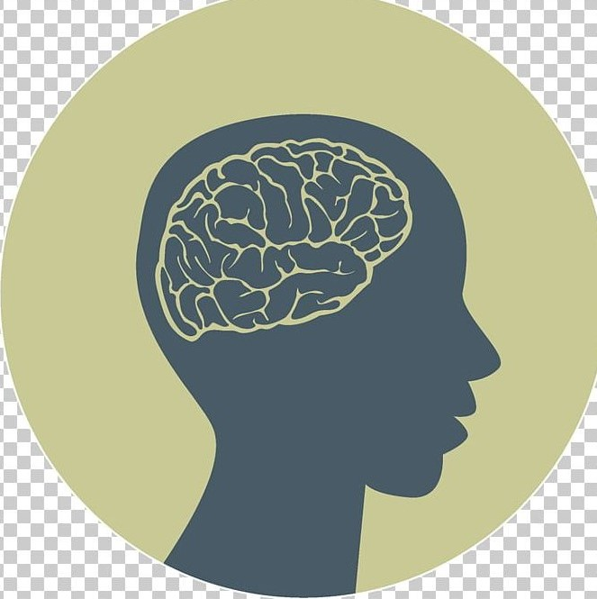

ANNEDA
La presión por obtener buenas calificaciones y cumplir con las expectativas académicas puede ser abrumadora.
El bullying, tanto físico como cibernético, puede llevar a sentimientos de aislamiento y baja autoestima.
Las presiones del grupo social pueden ser estresantes, especialmente en la adolescencia, cuando la aceptación social es fundamental.
Desequilibrios químicos en el cerebro, genética y cambios hormonales durante la pubertad pueden influir en la salud mental.
La comparación constante con los demás y la exposición a contenido negativo pueden afectar la autoestima y la salud mental.